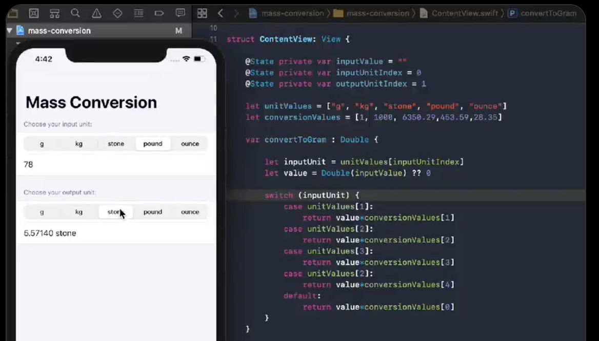
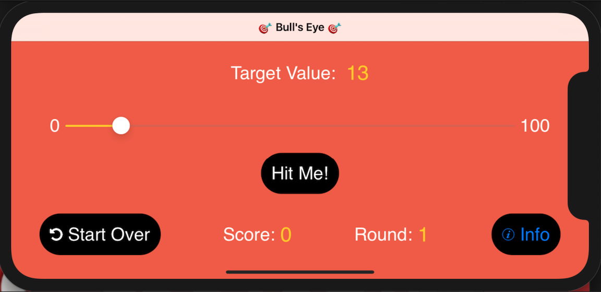

Projects

Mass Conversion App
SwiftUI Unit Converter
- Challenge: Build a unit converter where users choose input/output mass units and see instant conversion results.
- Solution: Used two segmented pickers, a TextField, and Text view. Stored units in a reusable string array and created a clean conversion function to handle logic efficiently.
- What I Learned: How to manage states with @State, loop over arrays with ForEach, and separate conversion logic into reusable functions for cleaner SwiftUI code.

Brain Train Game
SwiftUI Unit Converter
- Challenge: Simplify unit conversions for multiple categories in one app.
- Solution: Built a SwiftUI app with dynamic picker and MVVM architecture.
- Learned: Improved understanding of SwiftUI layouts and state management.

Cat vs Dog - dApp
SwiftUI Unit Converter
- Challenge: Simplify unit conversions for multiple categories in one app.
- Solution: Built a SwiftUI app with dynamic picker and MVVM architecture.
- Learned: Improved understanding of SwiftUI layouts and state management.

Bull's Eye App
SwiftUI Unit Converter
- Challenge: Simplify unit conversions for multiple categories in one app.
- Solution: Built a SwiftUI app with dynamic picker and MVVM architecture.
- Learned: Improved understanding of SwiftUI layouts and state management.